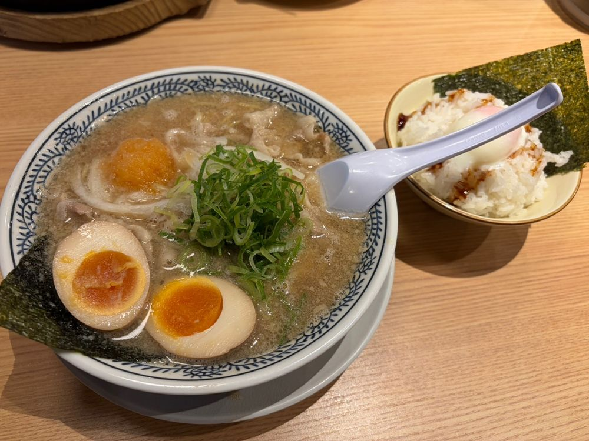

2026-11-12
Marugen Ramen with Lab Members研究室メンバーと丸源ラーメンへ

Tonight I went to Marugen Ramen with Mizukami and Aoki from our laboratory. I ordered their signature Niku Soba with an ajitama egg, plus a small rice bowl topped with an onsen egg. A warm bowl, with plenty of research talk on the side.今夜は研究室の水上君と青木君と、丸源ラーメンに行ってきました。 注文は看板メニューの肉そばに味玉トッピングと、温玉のせの小ごはん。 研究の話をしながらの、温かい一杯でした。